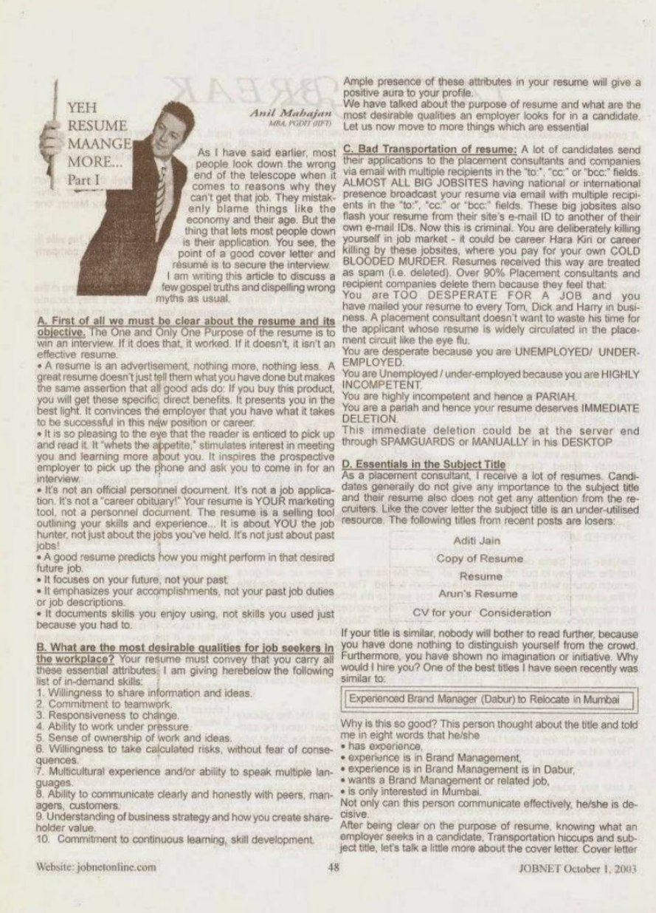
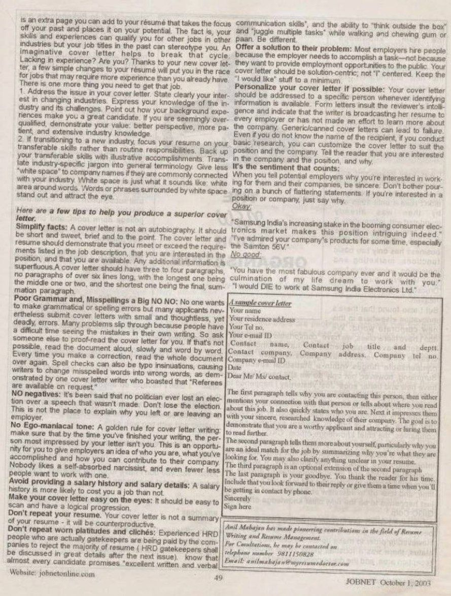

JOBNET Career Intelligence
Your Resume Must Tell More Than Your Career History
About This Article
In this thought-provoking article, Anil Mahajan challenged professionals to rethink the purpose of a resume. Rather than being a chronological record of education and employment, a resume should communicate professional value, achievements and future potential.
The article encouraged candidates to move beyond routine job descriptions and create resumes that clearly demonstrate their contribution, capabilities and career aspirations.
More than two decades later, this message is even more relevant in an increasingly competitive and technology-driven hiring environment. A resume is no longer just a document — it is often the first representation of a professional's leadership brand.
Original Publication
Scanned pages from the original printed publication.

JOBNET October 2003 — Page 1

JOBNET October 2003 — Page 2
Article Transcript
Originally published in JOBNET — October 2003
As I have said earlier, most people look down the wrong end of the telescope when it comes to reasons why they can't get that job. They mistakenly blame things like the economy and their age. But the thing that lets most people down is their application. You see, the point of a good cover letter and résumé is to secure the interview. I am writing this article to discuss a few gospel truths and dispelling wrong myths as usual.
A
First of all we must be clear about the resume and its objective. The One and Only One Purpose of the resume is to win an interview. If it does that, it worked. If it doesn't, it isn't an effective resume.
A great resume doesn't just tell them what you have done but makes the same assertion that all good ads do: If you buy this product, you will get these specific, direct benefits. It presents you in the best light. It convinces the employer that you have what it takes to be successful in this new position or career.
It is so pleasing to the eye that the reader is enticed to pick up and read it. It "whets the appetite," stimulates interest in meeting you and learning more about you. It inspires the prospective employer to pick up the phone and ask you to come in for an interview.
It's not an official personnel document. It's not a job application. It's not a "career obituary!" Your resume is YOUR marketing tool, not a personnel document. The resume is a selling tool outlining your skills and experience… It is about YOU the job hunter, not just about the jobs you've held. It's not just about past jobs!
B
What are the most desirable qualities for job seekers in the workplace? Your resume must convey that you carry all these essential attributes:
Ample presence of these attributes in your resume will give a positive aura to your profile.
C
A lot of candidates send their applications to placement consultants and companies via email with multiple recipients in the "To:", "CC:" or "BCC:" fields. Almost all big job sites having national or international presence broadcast your resume via email with multiple recipients. These big job sites also flash your resume from their own email ID to another of their own email IDs. Now this is criminal.
Resumes received this way are treated as spam — deleted. Over 90% of placement consultants and recipient companies delete them because they feel you are TOO DESPERATE FOR A JOB and have mailed your resume to every Tom, Dick and Harry in business. The logic runs like a downward spiral: desperate → unemployed → incompetent → pariah → immediate deletion. This deletion could happen at the server level through spam guards or manually on the recruiter's desktop.
D
As a placement consultant, I receive a lot of resumes. Candidates generally do not give any importance to the subject title and their resume also does not get any attention from recruiters. Like the cover letter, the subject title is an under-utilised resource.
The following subject titles from recent posts are losers: Aditi Jain · Copy of Resume · Résumé · Arun's Resume · CV for your Consideration.
If your title is similar, nobody will bother to read further — you have done nothing to distinguish yourself from the crowd. One of the best titles I have seen recently was:
Effective Subject Title Example
Experienced Brand Manager (Dabur) to Relocate in Mumbai
Not only can this person communicate effectively — he/she is decisive. In eight words, the candidate told me everything I needed to know.
Cover Letter
After being clear on the purpose of resume, knowing what an employer seeks in a candidate, transportation hiccups and subject title, let's talk a little more about the cover letter. Cover letter is an extra page you can add to your résumé that takes the focus off your past and places it on your potential.
If transitioning to a new industry, focus your resume on your transferable skills rather than routine responsibilities. Back up your transferable skills with illustrative accomplishments. Translate industry-specific jargon into general terminology.
The right tone — a comparison:
Good
"Samsung India's increasing stake in the booming consumer electronics market makes this position intriguing indeed."
"I've admired your company's products for some time, especially the Samton 56V."
Not Good
"You have the most fabulous company ever and it would be the culmination of my life dream to work with you."
"I would DIE to work at Samsung India Electronics Ltd."
Sample
Your name · Your residence address · Your Tel no. · Your email ID
Contact name, Contact job title and department
Contact company, Company address, Company tel no.
Company email ID · Date
Dear Mr / Ms / Contact,
The first paragraph tells why you are contacting this person, then either mentions your connection with that person or tells about where you read about this job. It also quickly states who you are. Next it impresses them with your sincere, researched knowledge of their company. The goal is to demonstrate that you are a worthy applicant and attract them to read further.
The second paragraph tells them more about yourself, particularly why you are an ideal match for the job by summarising why you're what they are looking for. You may also clarify anything unclear in your resume.
The third paragraph is an optional extension of the second paragraph.
The last paragraph is your goodbye. You thank the reader for his time. Include that you look forward to their reply or give them a time when you'll be getting in contact by phone.
Sincerely,
Sign here
Then & Now
Since this article was first published in 2003, the role of the resume has changed dramatically. Recruiters no longer spend several minutes reading every application. Many resumes are first evaluated by Applicant Tracking Systems (ATS), AI-assisted recruitment tools and executive search databases before they reach a hiring manager.
Today's resume must satisfy two audiences:
A modern executive resume is expected to communicate:
The question has evolved from "What work have you done?" to "What value have you created?"
How the Concept Has Evolved
Then — 2003
Today — 2026
Key Takeaways
Practical Advice
In today's hiring ecosystem, the most successful resumes are those that combine substance, clarity and strategic positioning.
Looking Ahead
Technology will continue to reshape recruitment, but organisations will always seek leaders who can create measurable business value.
That was the core message of Yeh Resume Maange More – Part I in 2003, and it continues to define successful executive careers today.
About the Author
Continue Reading